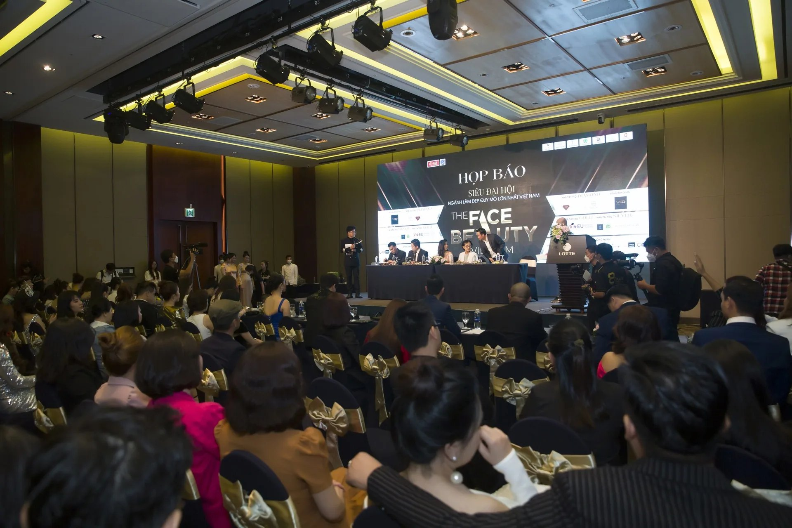

한국 네트워크
서울 디자인연구소와 대구 마케팅연구소, 두 개 본사 거점에서 전체 프로젝트를 총괄합니다.
현지 거점

- 조직 / 파트너
- 본사 (서울 디자인연구소 · 대구 마케팅연구소)
- 주소
- 서울 광진구 능동로49길 9, 2F / 대구 중구 국채보상로 488 섬유회관 3F
직접 실행 가능 업무
- 통합 마케팅 전략
- 브랜드 디자인
- 콘텐츠 제작
- 이커머스 운영
- 인플루언서 캠페인
- 비즈니스 매칭
FAQ자주 묻는 질문
한국 거점은 어디에 있나요?
본사 (서울 디자인연구소 · 대구 마케팅연구소) · 서울 광진구 능동로49길 9, 2F / 대구 중구 국채보상로 488 섬유회관 3F
한국에서 직접 실행하는 업무는 무엇인가요?
현지 팀이 다음 업무를 직접 수행합니다: 통합 마케팅 전략, 브랜드 디자인, 콘텐츠 제작, 이커머스 운영, 인플루언서 캠페인, 비즈니스 매칭.
한국에서 진행한 대표 프로젝트는 무엇인가요?
Black Loel 브랜드 패키지 디자인, 오뚜기 제품 콘텐츠 제작, 하이트진로 홍보물 제작